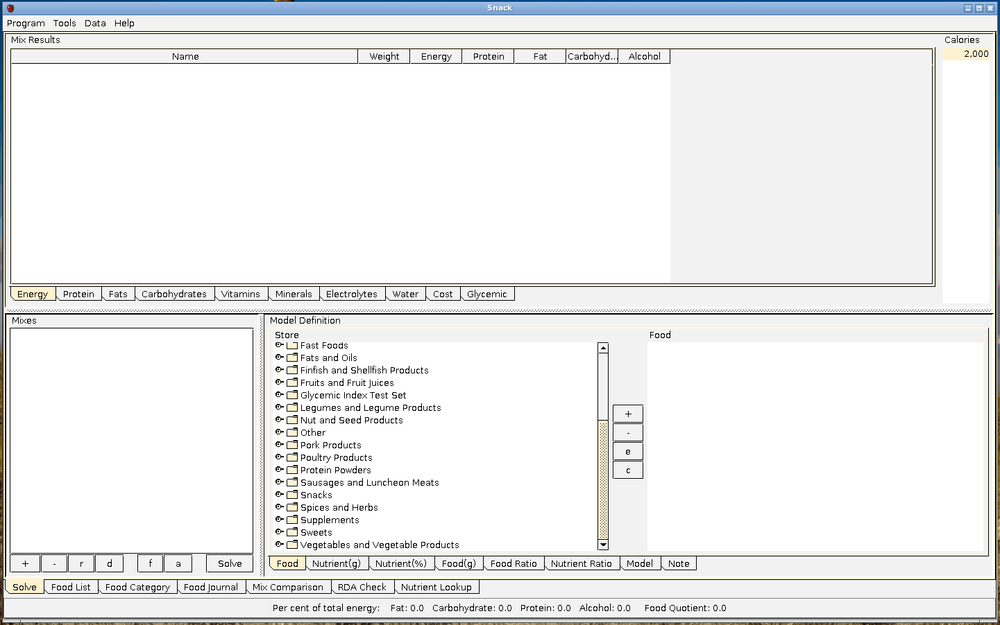
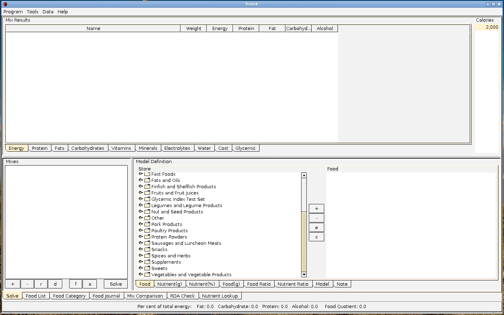
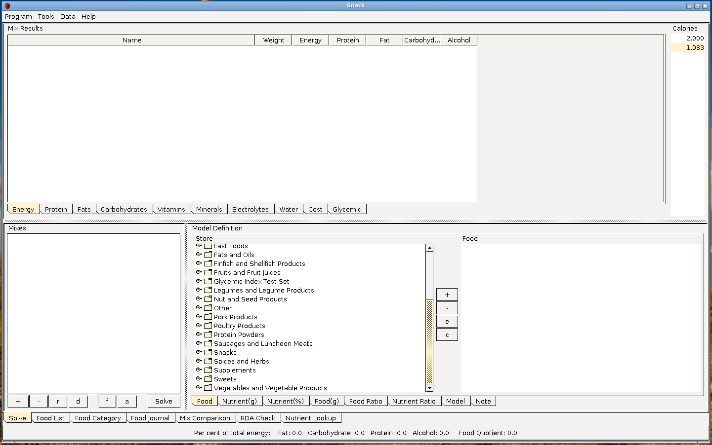

Exploring the Tools Menu
Calculating BMR

Basal metabolic rate is the amount of energy per unit of time that a person needs to keep the body functioning
at rest. You would need to add more calories to that number to account for physical activity. That would be a
ball
park figure that you could start experimenting with.
-----
Complete Protein Required (Under a No Carbohydrate Regimen)

This is the amount of complete protein you would need to eat to preserve your muscle mass while your body is in
starvation state. I just put it there as a reference, to get an ball park figure.
-----
Carbohydrate Needed To Inhibit Ketosis
If you don't eat carbohydrates your body goes into ketosis. Ketones are an alternative source of energy for
certain organs, particularly the brain. Conditions favoring ketogenesis include starvation, diabetes, and a very
high-fat, low-carbohydrate "ketogenic" diet.
-----
Calculate Digestible Carbohydrate
Carbohydrate, by difference is total carbohydrates and it includes digestible carbohydrates and non-digestible
carbohydrates (fiber). Digestible carbohydrate gives you energy. Fiber keeps you digestive system healthy.
-----
Calculate Glycemic Load

Glycemic load accounts for how much carbohydrate is in the food and for how much each gram of carbohydrate in
the
food raises blood glucose levels. Let's calculate glycemic load of 100 grams of apple. Glycemic Index is 38 and
digestible carbohydrates are 11.41 grams.
-----
Check Glycemic Index Range
Glycemic index is a measure that reflects a food's ability to raise blood glucose levels. Glycemic Index Range
could be low (55 or less), medium (56 to 69) or high (70 or more).
{kind=link}
{kind=link}
{kind=link}
{kind=link}
{kind=link}
{kind=link}